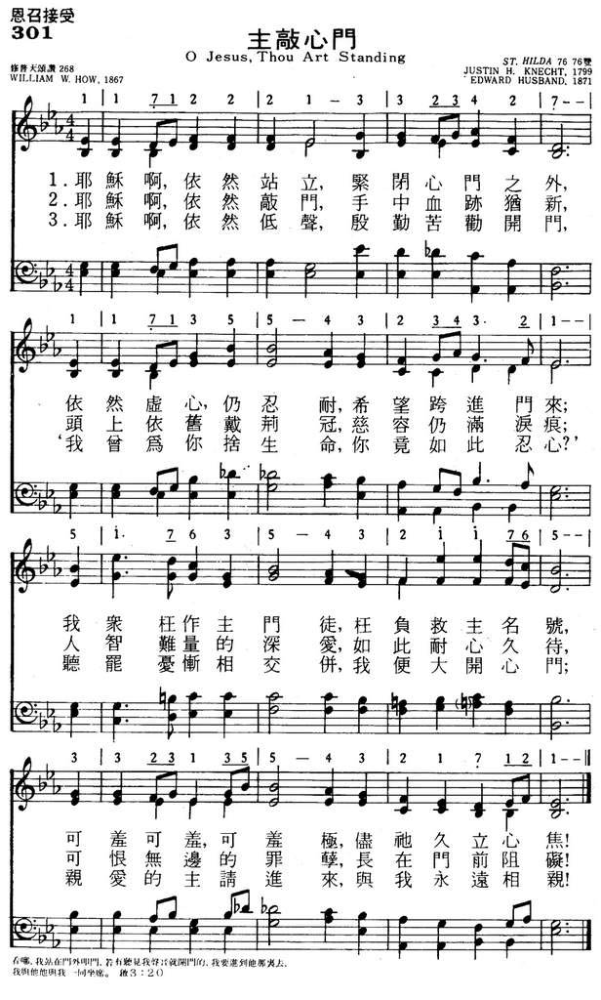

|
|
|
|
1 O Jesus, Thou art standing 2 O Jesus, Thou art knocking: 3 O Jesus, Thou art pleading Amen.
|
301主敲心门歌
1.耶稣啊，依然站立，紧闭心门之外，
依然虚心，仍忍耐，希望跨进门来。 众枉作主门徒，枉负救主名号， 可羞，可羞，可羞极，尽他久立心焦！ 2.耶稣啊，依然敲门，手中血迹犹新， 头上依旧戴荆冠，慈容仍满泪痕。 人智难量的深爱，如此耐心久待！ 可恨无边的罪孽，长在门前阻碍！ 3.耶稣啊，依然低声殷勤苦劝开门， “我曾为你舍生命，你竟如此忍心？” 听罢忧惭相交并，我便大开心门， 亲爱的主，请进来，与我永远相亲！ |
|
https://www.mred365.cn/szxg/7304.html
 |
|
|
|
|
-
221 主敲心门歌-新编赞美诗400首 https://www.youtube.com/watch?v=yU_YEJQf9do -
-
新编赞美诗400首
播放清單
| Text: | O Jesus, Thou Art Standing |
| Author: | William W. How, 1823-1897 |
| Tune: | ST. HILDA |
| Composer: | Justin H. Knecht, 1752-1817 |
| Composer: | Edward Husband, 1843-1908 |
| Short Name: | William Walsham How |
| Full Name: | How, William Walsham, 1823-1897 |
| Birth Year: | 1823 |
| Death Year: | 1897 |
William W. How
(b. Shrewsbury, Shropshire, England, 1823; d. Leenane, County Mayo, Ireland, 1897) studied at Wadham College, Oxford, and Durham University and was ordained in the Church of England in 1847. He served various congregations and became Suffragan Bishop in east London in 1879 and Bishop of Wakefield in 1888. Called both the "poor man's bishop" and "the children's bishop," How was known for his work among the destitute in the London slums and among the factory workers in west Yorkshire. He wrote a number of theological works about controversies surrounding the Oxford Movement and attempted to reconcile biblical creation with the theory of evolution. He was joint editor of Psalms and Hymns (1854) and Church Hymns (1871). While rector in Whittington, How wrote some sixty hymns, including many for children. His collected Poems and Hymns were published in 1886.
Bert Polman
===============
How, William Walsham, D.D., son of William Wybergh How,
Solicitor, Shrewsbury, was born Dec. 13, 1823, at Shrewsbury, and educated
at Shrewsbury School and Wadham College, Oxford (B.A. 1845). Taking Holy
Orders in 1846, he became successively Curate of St. George's,
Kidderminster, 1846; and of Holy Cross, Shrewsbury, 1848. In 1851 he was
preferred to the Rectory of Whittington, Diocese of St. Asaph, becoming
Rural Dean in 1853, and Hon. Canon of the Cathedral in 1860. In 1879 he was
appointed Rector of St. Andrew's Undershaft, London, and was consecrated
Suffragan Bishop for East London, under the title of the Bishop of Bedford,
and in 1888 Bishop of Wakefield. Bishop How is the author of the Society for
Promoting Christian Knowledge Commentary on the Four
Gospels; Plain Words , Four Series; Plain
Words for Children; Pastor in Parochia; Lectures on Pastoral Work; Three All
Saints Summers, and Other Poems , and numerous Sermons ,
&c. In 1854 was published Psalms and Hymns, Compiled by the
Rev. Thomas Baker Morrell, M.A., . . . and the Rev. William Walsham How,
M.A. This was republished in an enlarged form in 1864, and
to it was added a Supplement in 1867. To
this collection Bishop How contributed several hymns, and also to the S. P.
C. K. Church Hymns , of which he was
joint editor, in 1871. The Bishop's hymns in common use amount in all to
nearly sixty.
Combining pure rhythm with great directness and simplicity, Bishop How's
compositions arrest attention more through a comprehensive grasp of the
subject and the unexpected light thrown upon and warmth infused into facia
and details usually shunned by the poet, than through glowing imagery and
impassioned rhetoric. He has painted lovely images woven with tender
thoughts, but these are few, and found in his least appreciated work. Those
compositions which have laid the firmest hold upon the Church, are simple,
unadorned, but enthusiastically practical hymns, the most popular of which,
"O Jesu, Thou art standing"; "For all the Saints who from their labours
rest," and "We give Thee but Thine own," have attained to a foremost rank.
His adaptations from other writers as in the case from Bishop Ken, "Behold,
the Master passeth by," are good, and his Children's hymns are useful and
popular. Without any claims to rank as a poet, in the sense in which Cowper
and Montgomery were poets, he has sung us songs which will probably outlive
all his other literary works.
The more important of Bishop How's hymns, including those already named, and
"Lord, Thy children guide and keep"; "O Word of God Incarnate"; "This day at
Thy creating word"; "Who is this so weak and helpless"; and others which
have some special history or feature of interest, are annotated under their
respective first lines. The following are also in common use:—